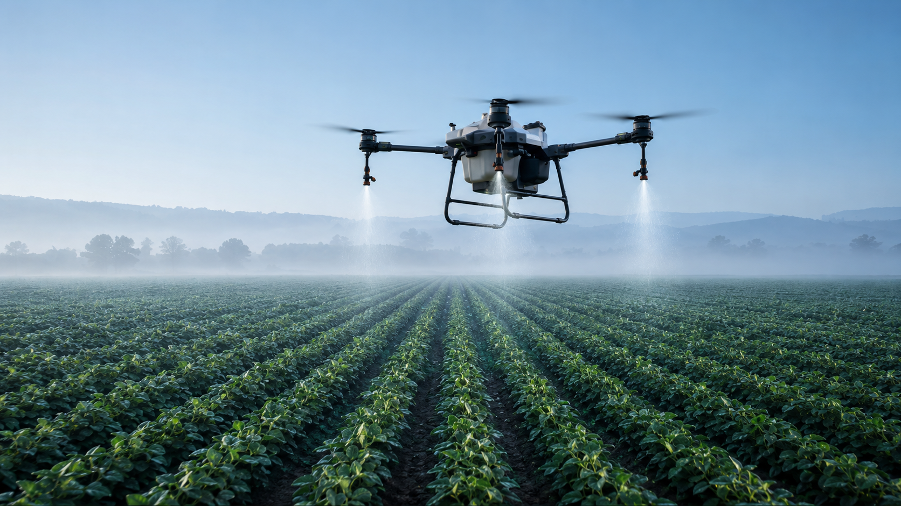

Hydroponik-Pilotprojekt
Hydroponik
Hydroponische Frischfutterproduktion mit kontrolliertem 7-Tage-Prozess, regionaler Rohstoffbasis und technischer Pilotvalidierung.
Hydroponik ansehenTechnologien für eine moderne Landwirtschaft
Bavaria AeroTech entwickelt technologiegestützte Lösungen für hydroponisches Frischfutter, Agrardrohnen und eine vernetzte Agrarwirtschaft in Bayern.

Entwicklungsfelder
Die vier Bereiche verbinden kontrollierte Produktion, Präzisionslandwirtschaft, technische Datenerfassung und langfristige Infrastrukturentwicklung.
Hydroponik-Pilotprojekt
Hydroponische Frischfutterproduktion mit kontrolliertem 7-Tage-Prozess, regionaler Rohstoffbasis und technischer Pilotvalidierung.
Hydroponik ansehenAgrardrohnen & Präzisionslandwirtschaft
Technologiegestützte Anwendungen für Monitoring, Datenerfassung und präzise landwirtschaftliche Arbeitsprozesse auf Basis professioneller Agrardrohnen.
Agrardrohnen ansehenTechnische Luftinspektionen
Luftgestützte Sichtprüfung und strukturierte Datenerfassung für Gebäude, Dächer, Photovoltaikanlagen und technische Infrastruktur.
Entwicklung ansehenProjektentwicklung
Der Bavaria AeroTech Green Hub verbindet Produktion, Technologieentwicklung, Pilotierung und regionale Kooperation in einem gemeinsamen Standortkonzept.
Green Hub ansehenAktueller Projektfokus
Bavaria AeroTech konzentriert sich auf belastbare Grundlagen für die nächsten Entwicklungsschritte.
Technologiepartner
DroneUA ist der benannte Technologiepartner von Bavaria AeroTech im Bereich Agrardrohnen und Technologietransfer.
Die Zusammenarbeit umfasst Technologietransfer, fachlichen Austausch, Systemauswahl und die Entwicklung eines auf den deutschen Markt abgestimmten Leistungsmodells.
Kooperationen ansehen
Langfristige Ausbaustufe
Projektentwicklung
Der Green Hub bildet die langfristige Plattform für Produktion, Technologieentwicklung, Pilotierung und regionale Kooperation.
Green Hub ansehenTeam
Geschäftsführung
Kaufmännische Leitung
Technische Leitung
Nächster Schritt
Ob Landwirtschaft, Forschung, Technologie oder Partnerschaft: Teilen Sie uns mit, welchen nächsten Schritt Sie mit uns prüfen möchten.